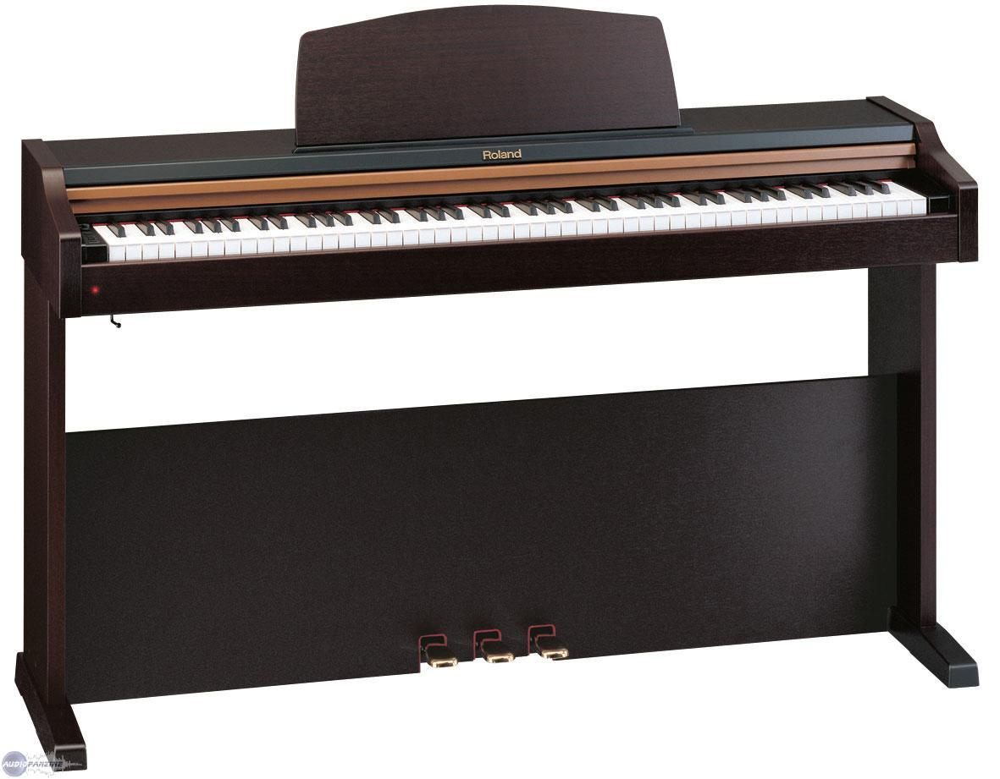
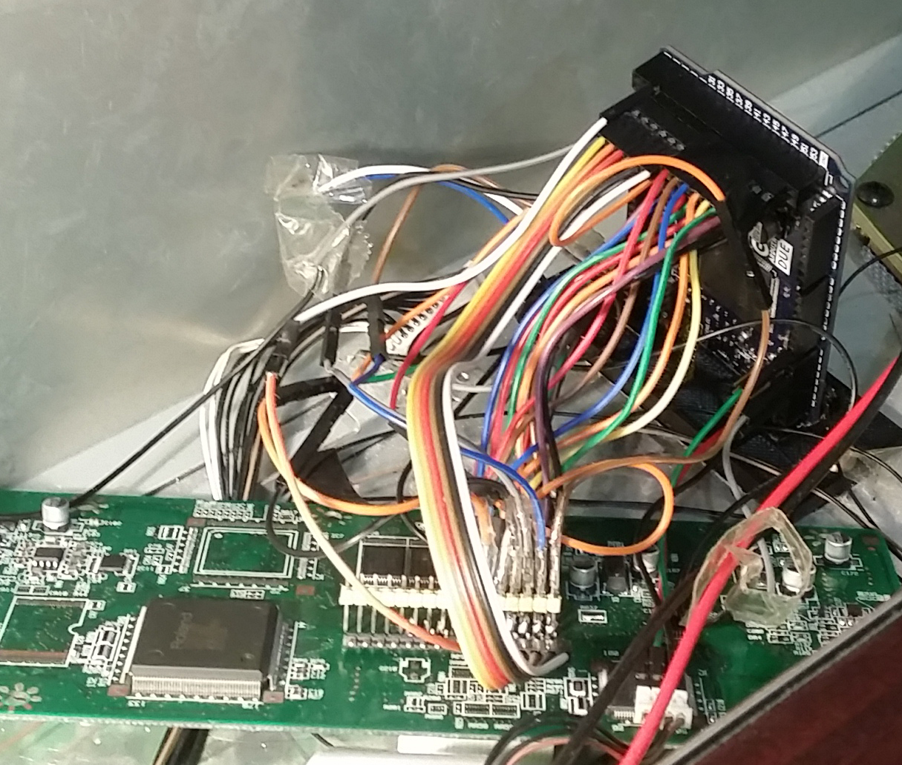

View On Github
I picked up a Roland HP-101 digital piano that was electrically dead. I replaced the electronics by connecting an Arduino Due to the keyboard connection (scan matrix). The Arduino appears as a native MIDI device to a computer connected over USB and transmits the appropriate notes, stength, duration e.t.c. The computer can then even synthesize the sound of a piano or other instruments, just as the original electronics did, and even play it back through the pianos speakers after connecting an amplifier.
Note that the green circuit below is one of the original circuits and plays no roll, it's only being used as a ribbon cable adapter.
 